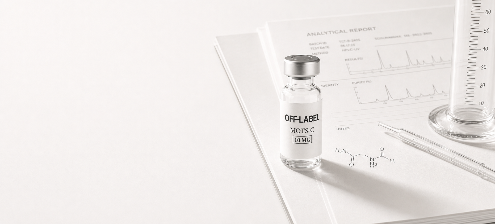
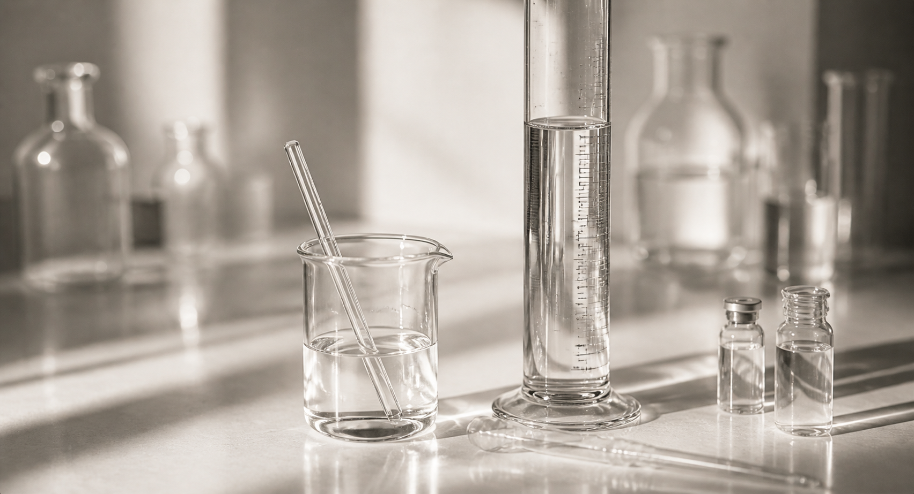
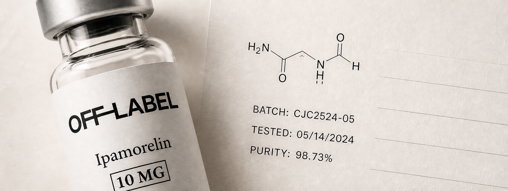

Curiosity
We stay curious. Always asking what's next.

About Off Label Research
We exist to question it.
To research with curiosity, integrity, and a commitment to doing things differently.
Our approach
Our mission
We believe knowledge should be open, information should be easy to find, and research shouldn't be complicated.
We provide the tools.
You do the research.

We stay curious. Always asking what's next.
We do what's right, even when no one is watching.
The details matter. The small things create the standard.
Research is a privilege. We take that seriously. So should you.

Where science
goes off-script.